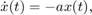
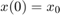
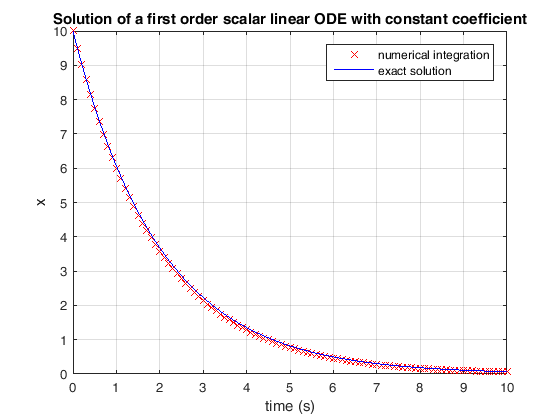
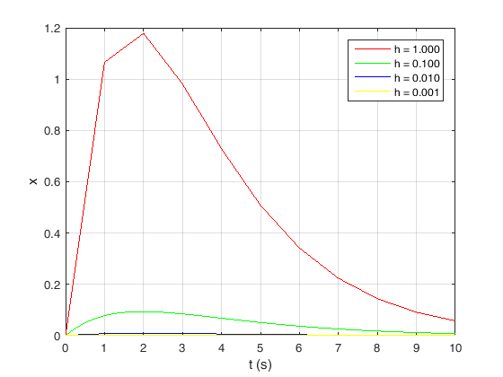

Matlab script example - Euler method
This is an example of a Matlab script to solve the differential equation  with initial condition , using the Euler method. We also compare with the exact solution and analyze the integration method error as a function of the integration step.
Some of the concepts that are introduced: scripts functions publishing markup cycles functions as arguments inline functions plots
Revisions: N/A
Contents
Example 1 - Simple integration
% Clear workspace and close all figures; clear; close all; % Initial condition and differential equation constant a = 1/2; x0 = 10; % Final time final_time = 10; % Integration step h = 0.1; % Compute time vector time = (0:h:final_time); % Reserve space for the solution vector (it is better to allocate this % in advance than to augment the size of the solution vector online, inside % a cycle). x = zeros(size(time)); % Euler method initialization (notice that the first index is 1, instead of % 0, as in C) x(1) = x0; % Euler method cycle for counter = 1:length(x)-1 x(counter + 1) = x(counter) + h * (-a * x(counter)); end % Plot numerical integration results figure; plot(time, x, 'xr');% traçar o x com 'x' a vermelho(r) xlabel('time (s)'); ylabel('x'); grid on; title('Solution of a first order scalar linear ODE with constant coefficient'); % Comparison with true solution hold on; plot((0:0.01:final_time), x0 * exp(-a .* (0:0.01:final_time)), 'b'); legend('numerical integration', 'exact solution');
Example 2: Using functions to solve the problem
% Clear workspace and close all figures; clear; close all; % Initial condition x0 = 10; % Final time final_time = 10; % Integration step h = 0.1; [time, x] = EulerMethod(x0, 0, h, final_time, @f1Fnt); % Plot numerical integration results figure; plot(time, x, 'xr'); xlabel('time (s)'); ylabel('x'); grid on; title('Solution of a first order scalar linear ODE with constant coefficient'); % Comparison with true solution hold on; plot((0:0.01:final_time), x0 * exp(-1/2 .* (0:0.01:final_time)), 'b'); legend('numerical integration', 'exact solution');
Analysis of results: The solutions are identical, as expected. After all, we used the same integration method.
Example 3: Analysis of the error as a function of the step size
% Clear workspace and close all figures; clear; close all; % Initial condition and differential equation constant a = 1/2; x0 = 10; % Final time final_time = 10; % Set of steps h_set = [1 0.1 0.01 1e-3]; % Set of colors color_set = ['r' 'g' 'b' 'y']; % An alternative definition for a function, inline: f1inlineFnt = @(x) -a*x; % Compute numerical solution and plot error for all steps figure; hold on; for counter = 1:length(h_set) h = h_set(counter); [time, x] = EulerMethod(x0, 0, h, final_time, f1inlineFnt); plot(time, x0 * exp(-a .* (0:h:final_time)) - x, color_set(counter)); end xlabel('t (s)'); ylabel('x'); legend(sprintf('h = %.3f', h_set(1)), ... sprintf('h = %.3f', h_set(2)), ... sprintf('h = %.3f', h_set(3)), ... sprintf('h = %.3f', h_set(4))); grid on; box on;
Analysis of the results: In this case, the smaller the step size, the smaller the numerical integration error is. Is it always like that?